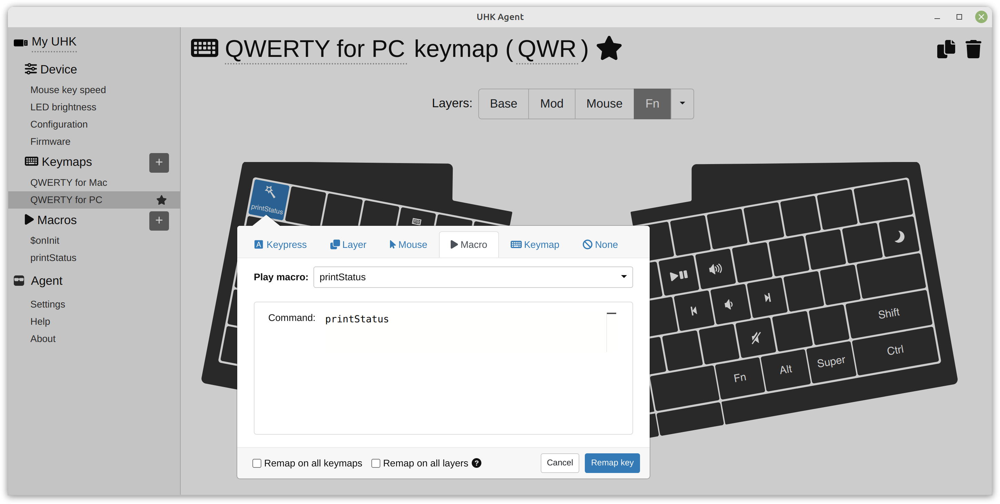

Smart macro reference
Smart macros enable the advanced customization of your UHK and its modules.
This documentation is a reference for smart macros, but let's start with a quick guide on how to use them.
Basic concepts and usage
See the following screenshot, which shows a macro named $onInit containing a command macro action that contains multiple macro commands:

$onInit is a special macro name. It's a macro event that executes each time your UHK gets powered and when you save its configuration.
set module.trackball.baseSpeed 1 is a macro command that sets the base speed of the trackball module to 1.
Comments are allowed after the # character per line. You can comment out commands or add helpful comments.
Macro commands work in any macros, not only in macro events, and you can bind them to any key. This way, you can make Fn + 1 set your trackball base speed to 1 and make Fn + 2 set it to 2, for example.
After creating a macro command action, it becomes in-place editable, so you can simply click into it to edit its commands. You'll likely save your macro commands many times to tweak them, in which case, it's quicker to hit Ctrl + S instead of clicking the "Save to keyboard" button.
When your UHK encounters an invalid macro command, its LED display will show ERR. The printStatus command reveals the cause of the error. Create a macro named printStatus containing the printStatus command:
Bind the macro to a shortcut, such as Fn + ` :
Then open an editor and hit Fn + ` to see the error message.
Last but not least, when a command macro action is selected, many interactive widgets, such as sliders, comboboxes, and checkboxes appear in this documentation, some depending on the currently attached modules. By interacting with these widgets, the relevant commands appear in the current command macro action without writing any code:
Macro events
Macro events are specially named macros that are executed on select occasions. When your UHK powers up and when you save its configuration, the relevant macro events are executed in the following order:
- The
$onInitevent is always executed. - The
$onKeymapChange {keymapId}event, such as$onKeymapChange QWR, is executed when a keymap, such asQWR, is activated.
Macro commands
Following is the list of available macro commands.
printStatus
When the UHK encounters an invalid macro command, the LED display will display ERR, and the status buffer will contain the error message. This command "types" the content of the status buffer for debugging purposes.
We recommend binding this command to a shortcut, such as Fn + `, for easy accessibility and triggering it in a text editor when encountering an error.
set
The set command sets variables that affect the behavior of the UHK and its modules. This command has many different parameters, which are explained below.
set » module speeds
Sets module speeds. These settings are not useful for the key cluster due to the limited resolution of its mini trackball.
Syntax isset module.{module}.{property} {value}{module}is ofkeycluster,trackball,trackpoint,touchpad{property}is ofbaseSpeed: The speed multiplier part that always applies.{value}ranges from0to10.0and defaults to0.5for the trackball and touchpad and0for the touchpad.speed: The speed multiplier part that is affected byxceleration.{value}ranges from0to10.0and defaults to0.5for the trackball,1.0for the trackpoint, and0.7for the touchpad.xceleration: The acceleration/deceleration exponent.{value}ranges from0to1.0, defaults to1for the trackball and touchpad, and0for the trackpoint.caretSpeedDivisor: Divisor that affects the speed in caret mode. The higher the value, the slower the caret speed.{value}ranges from1to100and defaults to16.ScrollSpeedDivisor: Divisor that affects the speed in caret mode. The higher the value, the slower the scroll speed.{value}ranges from1to100and defaults to8.
{value} float: The range is dependent on{property}.
| {{moduleDescriptions[module]}} | |
|---|---|
| {{speedProp.desc}} |
|
set » module axis locking
When first moving in a navigation mode with axis locking enabled, the axis is locked to one of the axes. The following variables define axis locking behavior.
Syntax isset module.{module}.{property} {value}{module}is ofkeycluster,trackball,trackpoint,touchpad{property}is of{scrollAxisLock} boolean:0disables scroll axis locking,1enables scroll axis locking. By default, axis locking is enabled in scroll and discreet modes for right-hand modules and scroll, caret, and media modes for the key cluster.{axisLockFirstTickSkew} float of 0.5 to 2.0: The first event produced when the axis is not yet locked can be adjusted as follows.- Set
{value}to0.5to require a stronger push at the beginning of a movement. Useful for the mini trackball to not produce an unwanted move event when trying just to click it. With this value, it will require two roll events to activate. - Set
{value}to2.0to make the first event more responsive. For example, caret mode will make the first character move with a very gentle push, while consecutive activations will need greater momentum.
- Set
axisLockSkew float of 0.5 to 2.0: Affects how hard it is to change the locked direction once the axis is locked. With{value}of0.5, you have to produce a stroke that goes at least twice as fast in the non-locked direction compared to the locked one. A{value}of2.0allows changing axes easily.
{value} float: The range is dependent on{property}.
| {{moduleDescriptions[module]}} | |
|---|---|
| Scroll axis lock enabled |
|
| Axis lock first tick skew |
|
| Axis lock skew |
|
set » module scroll direction
Inverts the vertical scroll direction per module.
Syntax isset module.{module}.invertScrollDirection {value}{module}is ofkeycluster,trackball,trackpoint,touchpad{value} boolean:0leaves axes unswapped,1swaps axes.
| {{moduleDescriptions[module]}} | |
|---|---|
| Invert scroll direction |
set » key cluster axis swapping
Swaps the X and Y axes of the key cluster's mini trackball, which can be useful because it's easier to roll the mini trackball along the horizontal axis with the thumb. This setting is available for all modules, but we only recommend using it with the key cluster.
Syntax isset module.{module}.swapAxes {value}{module}is ofkeycluster,trackball,trackpoint,touchpad{value} boolean:0leaves axes unswapped,1swaps axes.
set » touchpad pinch-to-zoom divisor
Controls the sensitivity of the touchpad's pinch-to-zoom gesture.
Syntax isset module.touchpad.pinchZoomDivisor {value}{value} integer of 0 to 10, defaults to 4: The higher the value, the larger gesture is needed for zooming.
| Touchpad pinch-to-zoom divisor |
|
set » touchpad pinch-to-zoom mode
Controls the behavior of the touchpad's pinch-to-zoom gesture.
Syntax isset module.touchpad.pinchZoomMode {navigationMode}{navigationMode}is ofmedia,zoom,zoomPc,zoomMac,none. The defaultzoomnavigation mode usually works fine, but extra + and - characters may be displayed by some applications, in which case the more specificzoomPcorzoomMacmode should be used. Themedianavigation mode adjusts the volume. See set » module navigation modes for more details.
| Touchpad pinch-to-zoom mode |
|
set » module navigation modes
UHK modules support the following navigation modes, which are mapped by layer and module:
- Cursor mode: In this mode, the module controls mouse movement. This is the default mode for the Base layer except for the key cluster, whose mini trackball is not well-suited for controlling the pointer due to its limited resolution; hence, it scrolls by default.
- Scroll mode: In this mode, the module is used for scrolling. This is the default mode for the Mod layer except for the key cluster, which moves the pointer on the Mod layer by default.
- Caret mode: In this mode, the module produces arrow key taps, which can be used to move in text editors. This is the default mode for the Fn layer.
- Media mode: In this mode, the module increases/decreases volume via up/down directions and switches to the previous/next track via left/right directions. This mode is not enabled by default on any layer.
- Zoom PC mode: In this mode, Ctrl + + and Ctrl + - shortcuts are produced via up and down directions.
- Zoom Mac mode: In this mode, Cmd + + and Cmd + - shortcuts are produced via up and down directions.
- Zoom mode: In this mode, both PC and Mac zoom shortcuts are produced via up and down directions. Theoretically, this behavior is OS-agnostic, and it works with some applications, but other applications may produce unwanted + / - characters.
set module.{moduleId}.navigationMode.{layerId} {navigationMode}{moduleId}is ofkeycluster,trackball,trackpoint,touchpad{layerId}is ofbase,mod,mouse,fn,fn2,fn3,fn4,fn5,shift,ctrl,alt,super{navigationMode}is ofcursor,scroll,caret,media,zoom,zoomPc,zoomMac,none
| Layer | {{moduleDescriptions[module]}} |
|---|---|
| {{layer}} |
|
set » navigation mode action
Customize caret or media navigation mode behavior by binding directions to shortcuts or macros.
Syntax isset navigationModeAction.{mode}.{direction} {action}{mode}is ofcaret,media,zoomPc,zoomMac{direction}is ofup,down,left,right{action}is ofmacro {macroName},keystroke {shortcut}{macroName}is the case-sensitive macro name that must not contain spaces.{shortcut}is of{modifiers},{key},{modifiers}-{key}{modifiers}is formatted as[L|R]{S|C|A|G}of which[L|R]is an optional left or right side modifier and{S|C|A|G}is Ctrl, Alt, Shift, or Gui.{key}describes the key, such asenter. See the full range of keys in the examples below.
Macro name example
{mode} : |
|
{direction} : |
set navigationModeAction.{{navigationModeActionMode}}.{{navigationModeActionDirection}} macro YourMacroName
Shortcut example
{shortcut} : |
|
{key} : |
set navigationModeAction.{{navigationModeActionMode}}.{{navigationModeActionDirection}} keystroke {{getScancode()}}
set » modifier layer triggers
Controls whether modifier layers are triggered by the left, right, or either modifier.
Syntax isset modifierLayerTriggers.{layer} {modifiers}{layer}is ofshift,alt,super,control{modifiers}is ofleft,right,both (default)
| Layer | Modifier trigger |
|---|---|
| {{modifier}} | |
set » mouse key speeds
Except for axisSkew, these settings are already featured on Agent's "Mouse key speed" page, which should be used primarily. These settings are still useful for keymap-specific mouse key speed settings.
set mouseKeys.{mode}.{property} {floatValue}{mode}is ofmove,scroll{property}is ofinitialSpeed: When mouse movement begins, this is the starting speed.baseSpeed: When a mouse key is held, speed increases until it reaches this speed.initialAcceleration: The rate of acceleration from the initial speed to the base speed.deceleratedSpeed: This speed is used when using a mouse key along with the decelerate key.acceleratedSpeed: This speed is used when using a mouse key along with the decelerate key.axisSkew: Multiplies horizontal axis and divides vertical axis. It can be useful for wide or tall screens.{floatValue}is reasonable from0.5to2.0, and defaults to1.0
| Pointer speed | Scroll speed | |
|---|---|---|
| {{prop.desc}} |
|
|
set » diagonal speed compensation
By default, the mouse pointer is faster diagonally than horizontally or vertically when using the mouse keys. This setting slows down the pointer diagonally when the mouse keys are used, so its speed matches horizontal and vertical speeds.
Syntax isset diagonalSpeedCompensation {compensationEnabled}{compensationEnabled} boolean:0disables compensation,1enables compensation.
set » sticky modifiers
This setting affects the behavior of shortcuts on non-base layers. For example, if Mod + d is mapped to Alt + Tab and Mod + d is pressed, Alt + Tab is triggered, then if d is released while Mod is still held, Alt is held, too; hence, the modifier is sticky.
Syntax isset stickyModifiers {stickyMode}{stickyMode}is ofsmart (default): Make only a select few shortcuts sticky, namely when Alt, Super, or Ctrl is pressed along with ~, Tab, or an arrow key.never: Make every key non-sticky.always: Make every key sticky.
set » double tap timeout
Controls the double tap timeout for layer locking.
Syntax isset doubletapTimeout {timeout}{timeout} integer of 0 to 1000: Timeout in milliseconds.
set » keystroke delay
Allows slowing down keyboard output. This setting is handy for lousily written RDP clients and other software which scans keys once a while and processes them in the wrong order if multiple keys have been pressed in between.
This setting adds a delay whenever a basic USB report is sent. During this delay, the key matrix is still scanned, and keys are debounced, but instead of activating, the keys are added into a queue to be replayed later.
Syntax iskeystrokeDelay {delay}{delay} integer of 0 to 1000: Delay in milliseconds. The recommended value is10if you have issues with RDP missing modifier keys,0otherwise.
set » chording delay
Allows triggering chorded shortcuts in arbitrary order. For example, if A + Ctrl is pressed instead of Ctrl + A, the keyboard will still send Ctrl + A if the two key presses follow within the specified time.
Syntax isset chordingDelay {delay}{delay} integer of 0 to 255, defaults to 0: Delay in milliseconds.
set » enable/disable LEDs
Enable/disable all LEDs.
Syntax isset leds.enabled {ledStatus}{ledStatus} boolean:0disables LEDs,1enables LEDs.
set » LED brightness
Set the brightness of all LEDs.
Syntax isset leds.brightness {brightness}{brightness} float of 0.0 to 1.0: The level of brightness.
set » LED fade timeout
Set timeout, after which all LEDs fade out to save power until the next user interaction.
Syntax isset leds.fadeTimeout {timeout}{timeout} integer of 0 to 100, defaults to 0:0means disabled fade timeout. Otherwise, the timeout value is specified in minutes.
| LED fade timeout |
|
set » enable/disable extended macro commands
Enable/disable the extended commands of the macro engine.
There are extended macro commands available besides the ones mentioned here, but they're disabled by default because most of them are quite niche. These commands can be explicitly enabled via this variable, after which they can be used just like the commands featured here.
We plan to make most or possibly all of the extended commands directly accessible and include them in this documentation step by step after careful consideration.
Syntax isset macroEngine.extendedCommands {extendedCommandsEnabled}{extendedCommandsEnabled} boolean:0disables extended commands (default),1enables extended commands.